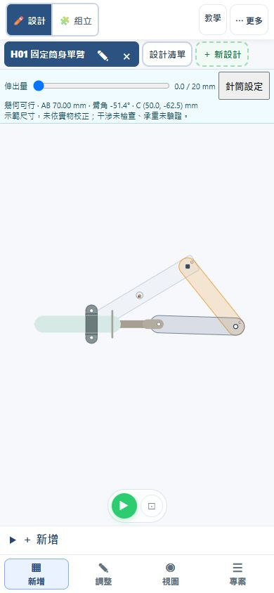
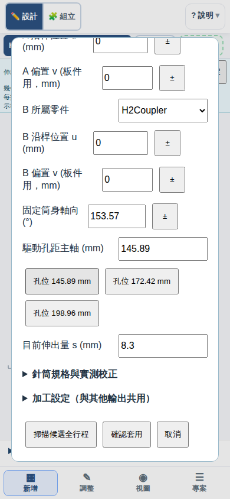
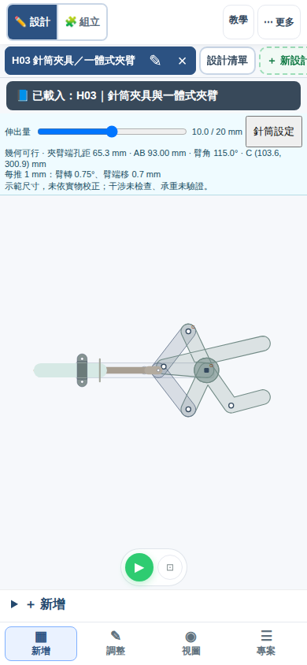
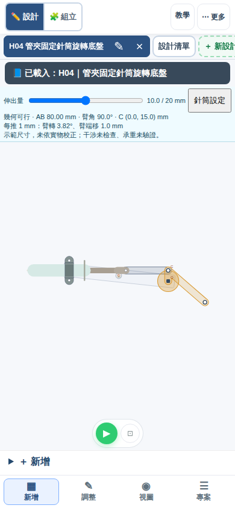
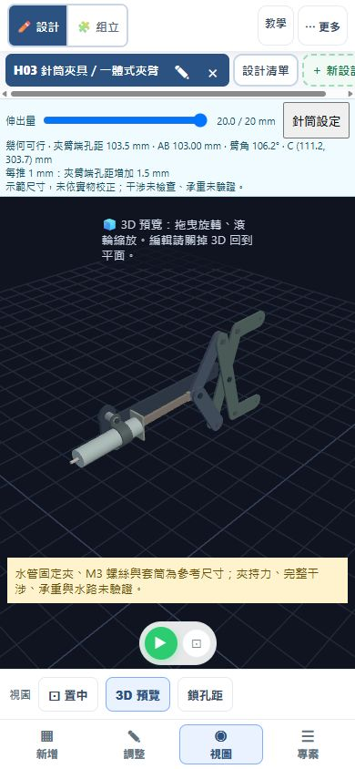

針筒推直線，連桿把它變成動作
先看筒身固定在哪，再找可轉動的螺絲。針筒與管夾外形參考老師提供的 Fusion 模型，採簡化側視板件；20 mm 是教學區間，尚未依實際針筒校正。
第一課：固定針筒單臂 H01
目標：指出筒身不動、推桿走直線、活動臂走圓弧，找出連接兩者的短連桿。
開啟 H01 單臂- 找出固定管夾、推桿孔、短連桿兩端和活動臂主軸。管夾螺絲鎖固；短連桿兩端的螺絲保留轉動。
- 拖動伸出量 0–20 mm，再播放一輪；觀察推桿直線移動如何讓單臂抬起。
- 按「針筒設定」，只改活動臂長 60／80／100 mm，先預測，再掃描候選全行程，通過才確認套用。
- 從空白自己做一次：新增設計，畫機架（兩端都鎖成固定點）、擺臂（一端固定在機架的轉軸上）和短連桿（一端接擺臂的活動端）。接著按「動力來源 → 10cc液壓針筒（管夾固定）」，先點機架上放管夾的位置，再點短連桿未接擺臂的那個端孔。系統會自動找出擺臂當輸出，並開啟設定視窗；先掃描全行程，通過再確認套用，最後與 H01 範例比較臂角。管夾離推桿孔太近（筒身放不下）或推桿沒接在短連桿端孔時，會說明原因，讓你重點。
連回第 2 單元：針筒推短連桿帶動擺臂，就是「曲柄滑塊」反過來用：第 2 單元由轉動的曲柄帶動滑塊走直線，這裡由走直線的推桿（滑塊）推著連桿，讓轉動的臂跟著轉。直線的一側出力，轉動的一側跟隨。

過關：三組臂長均能往返，交一段附行程與角度的動畫，說明哪裡固定、哪裡轉動。20 mm 是教學區間，不代表實物行程；擺角也不代表承重。舊 H01 作品仍保留原兩端鉸接，請由上方按鈕載入新版。
第二課：固定筒身抬臂 H02
目標：保持臂端距主軸 250 mm，只換驅動孔位，比較相同 0–20 mm 伸出量造成的臂角變化，並讀「每推 1 mm」的轉角。250 mm 臂端是本課改製設定；孔距與短連桿取自模型。
開啟 H02 抬臂- 找出管夾、片狀推桿孔、短連桿及長臂轉軸。先猜：推桿走直線，臂端也會走直線嗎？
- 播放一次，觀察臂端走圓弧。按「針筒設定 → 掃描候選全行程」，確認 0–20 mm 可解。
- 伸出量調到 10 mm，讀針筒列上的「每推 1 mm：臂轉 x.xx°、臂端移 y.y mm」。原 172.422 mm 孔約每推 1 mm 轉 0.32°、臂端移 1.4 mm。
- 保持其他條件不變，選「孔位 145.892 mm」，掃描後「確認套用」，伸出量同樣放 10 mm 再讀一次：約每推 1 mm 只轉 0.09°，臂端約移 0.4 mm。再把伸出量拉到 16 mm 附近，臂角會停住並折返。
- 試選 198.958 mm：目前配置不可達，應出現錯誤。按取消，確認作品沒有被改壞。

想一想（力和距離的交換）：172.422 mm 孔每推 1 mm 轉得多，臂舉得高、動得快；145.892 mm 孔每推 1 mm 轉得少，同樣推 20 mm 舉得低，但每一點轉角都要推較多，推起來較省力，也就是「舉得重」。要用力還是要距離，是一種交換。決定每 mm 轉多少的，是力臂（支點到連桿所在直線的垂直距離），不是孔到支點的距離；所以孔離支點較近，不一定轉得比較多。145.892 mm 孔的連桿在行程中接近死點，臂角在 0–20 mm 內會折返，每 mm 轉角降到接近 0（約 16 mm 處）。讀數為本模型在 10 mm 的幾何結果，非實物測量。
過關：兩個有效孔位均完成往返，影片附孔距與臂角；用「每推 1 mm」的讀數說出哪個孔舉得高、哪個較省力，並說出短連桿為何需要兩端可轉。不要把轉角大小說成承重能力。
第三課：針筒夾具 H03
目標：推桿伸出＝夾緊。在 0–20 mm 之間往返，觀察左右對稱的夾臂與「夾臂端孔距」如何隨推出而變小。
開啟 H03 夾具- 找兩支 60 mm 短連桿、中央支點（在針筒軸線上）與前方一體式夾持段。兩片夾臂左右對稱，不互相交叉。
- 先猜推出時開口如何改變，再播放，讀兩個夾臂端孔的距離：推出約 20 mm，距離由約 83 mm 縮到約 47 mm，也就是「推出＝夾緊」。
- 點選任一夾臂：後端連桿點與前端夾持段應一起亮起外框。兩段為同一片板，轉動時折角與孔距保持不變。

設計原則：用水的針筒，推比拉可靠。拉的時候靠吸力，管路接頭容易吸進氣泡，力量也比較小；推的時候水被壓著走，傳力直接。所以夾爪設計成推出去才夾緊，鬆開靠推桿縮回。這是本課的設計選擇，不是實測比較。
過關：能指出兩支短連桿如何帶動兩片夾臂，並說明同一片板上的折角為何不變，以及為什麼讓「推」去做夾緊。三個求解點決定剛體運動，末端以造形頂點延伸，不新增自由轉軸。端孔距不是夾持面淨開口，沒有模擬抓牢或搬運物件。
第四課：旋轉底盤 H04
目標：用俯視圖看針筒怎麼讓轉盤繞垂直軸轉動，讀出「每推 1 mm」轉幾度，並說明傳動角太斜為什麼會推不動。這是 H05 三軸手臂的底盤。
開啟 H04 旋轉底盤- 這張是俯視圖：畫面是從上往下看，轉盤的中心是垂直轉軸，繞它轉的是整個底盤。找出管夾、短連桿、轉盤的曲柄銷（連桿接轉盤的孔）和轉盤上較遠的安裝點。
- 拖動伸出量 0–20 mm，轉盤轉過約 84°。針筒軸線刻意偏離轉軸一個曲柄半徑（15 mm），所以 10 mm 時連桿剛好垂直曲柄。
- 讀針筒列上的「每推 1 mm」：10 mm 附近約轉 3.8°，兩端約 5.4° 與 4.8°。曲柄半徑愈小，每 mm 轉得愈多。
- 先猜，再到「針筒設定」只改安裝孔位或連桿長，掃描全行程：連桿與曲柄愈接近一直線，轉角愈不穩，每 mm 的轉角變化愈大。

傳動角與死點：連桿與曲柄的夾角叫傳動角。90° 時推力幾乎全用來轉；夾角愈接近 0° 或 180°，連桿愈像在頂著轉軸，推了也轉不動，這就是死點，和 H02 的 145.892 mm 孔位在行程中折返是同一件事。本例全程傳動角約 52°–136°，離死點還有距離。
之後：H05 會把升降總成裝在轉盤的安裝點上，轉盤一轉，整組升降臂跟著轉。
過關：說出轉盤總轉角與 10 mm 處每推 1 mm 的轉角；說出傳動角接近死點時會發生什麼事；只改一個尺寸，掃描全行程並記錄結果。以上為幾何結果，不含摩擦、承載與水路，20 mm 為教學區間，尚未依實物校正。
交一段動畫到 Classroom
完成後由「匯出 → MP4 動畫」產生伸出、縮回的一輪影片；手機可在「專案」尋找 MP4。可先切 3D 查看圓筒、法蘭、片狀接頭及管夾，再匯出所見視圖。影片附行程、檢查結果與版本；預覽機構完整入鏡後下載，回 Google Classroom 附加至指定作業。不用學習單。
存作品 JSON 可保留尺寸、固定軸向與夾臂造形；也可用復原回到上一筆修改。影片不支援的瀏覽器才改用裝置錄影。

教師：固定方式與模擬界限
新版 H01／H02／H03 的筒身都由管夾固定，推桿孔沿固定軸線移動，舊 H01 兩端鉸接作品則保留原約束，不能只改外觀替代。管夾螺絲鎖固、連桿螺絲作轉軸。三例沿用共用求解器，播放／匯出前採樣；錯誤時保留作品。3D 外形為模型尺寸參考，未重建原始雙側板、隔圈、所有五金及完整裝配；加工檔暫不輸出。水量耦合、壓力、氣泡、摩擦、承載與接觸未驗證。
H01 先辨識固定與轉動，再以 H02 比較驅動孔位，最後以 H03 辨識一體式夾臂。組合取放留到實物固定、干涉與水路核對完成之後。